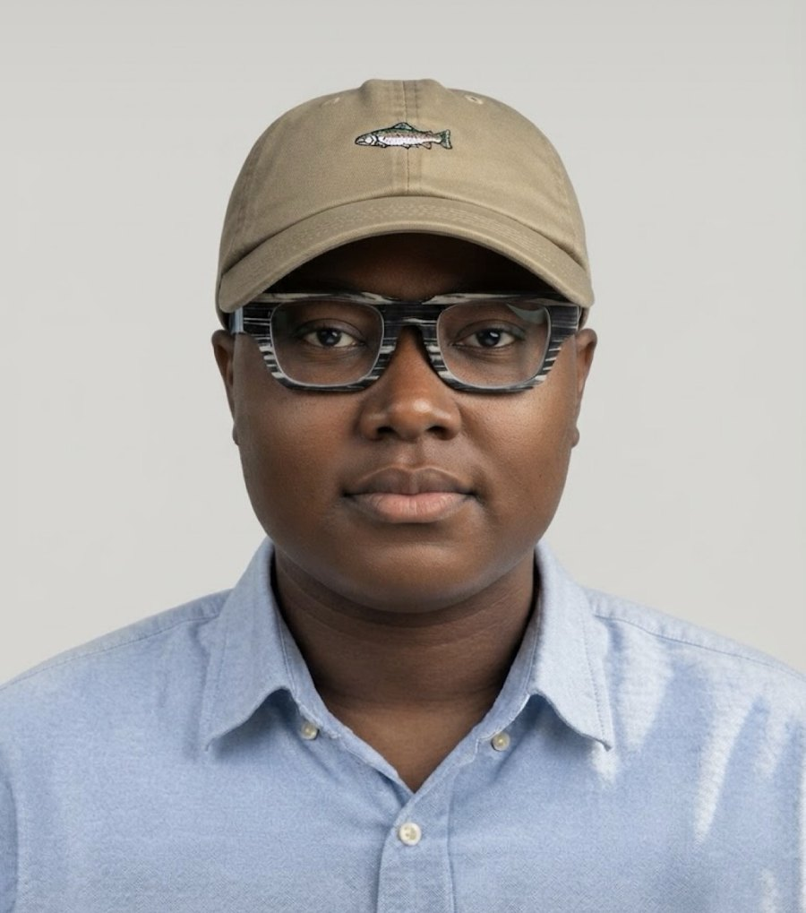

Welcome, thanks for stopping by
Nokshuwan Sekyen Sati
First-year Cybersecurity student at MIVA Open University, and solo founder of SwiftMarketplace, a trust-first marketplace built to cut fraud out of online trading in Nigeria. This site doubles as my COS 106 term project: a working portfolio and academic planner.

Cybersecurity, Year 1
MIVA Open University, Jos, Plateau State, matriculation no. 2025/C/CYB/1002.
Founder & developer
Built and shipped SwiftMarketplace end to end while studying full-time.
Based in Jos, Nigeria
Working across product, security, and code: one person, three hats.
A short biography
I'm studying Cybersecurity because I want to understand systems well enough to defend them, and because most of what I build ends up handling other people's money or data, so that understanding isn't optional. Alongside coursework, I run SwiftMarketplace, a production platform I designed, built, and secured myself, aimed at Nigeria's online trading fraud problem.
I like projects that are actually used by real people, not just graded. SwiftMarketplace has an escrow system, a fraud-detection layer, and an in-app assistant, all shipped and live. This portfolio site is the same instinct applied to a smaller brief: build the real thing, not a mock-up of it.